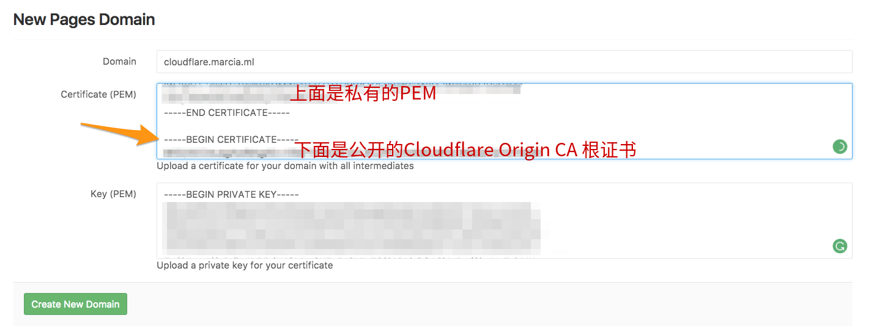
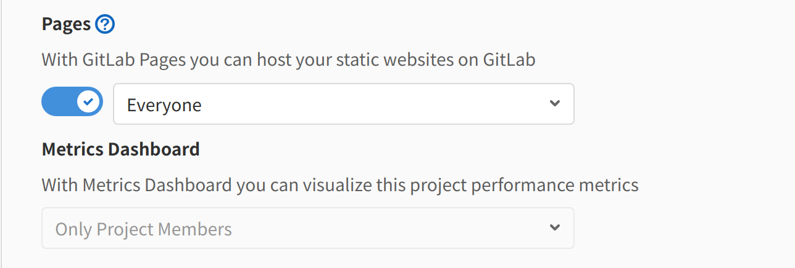

3.1.1. docsify
A magical documentation site generator.
3.1.1.1. 部署
官方文档 很清楚，不再梳理，只记录个人方案
3.1.1.2. 侧边栏折叠
官方一直没解决
3.1.1.2.1. 方案一 插件
别忘了添加css样式
<link rel="stylesheet" href="sidebar.css">
3.1.1.2.2. 方案二 JS+CSS 目前采用
JS
<script src="https://cdnjs.cloudflare.com/ajax/libs/jquery/3.3.1/jquery.min.js"></script>
css
.sidebar-nav-parent-li {
position: relative;
}
.sidebar-nav {
padding-right: 10px;
}
.sidebar-nav .ul-after {
content: '';
width: 10px;
height: 30px;
/* background: red; */
position: absolute;
right: 10px;
top: 0px;
display: flex;
align-items: center;
}
.ul-after-sanjiao {
width: 0;
height: 0;
border-left: 8px solid #cecece;
border-top: 8px solid transparent;
border-bottom: 8px solid transparent;
transition: transform 0.3s;
position: relative;
}
.ul-after-sanjiao::after {
content: '';
width: 0;
height: 0;
position: absolute;
top: -8px;
left: -11px;
border-left: 8px solid #fff;
border-top: 8px solid transparent;
border-bottom: 8px solid transparent;
}
.ul-after-sanjiao:hover {
border-left: 8px solid #42b983;
}
.sidebar-nav-parent-li-shouqi .ul-after-sanjiao {
transform: rotate(90deg);
transition: transform 0.3s;
}
docsify html 配置
plugins: [
function (hook) {
hook.doneEach(function () {
let max_cengji = 3; //默认展开层级深度
//添加箭头
$('.sidebar-nav').find('li').each(function (i, e) {
var el = e;
if (el.nextSibling && el.nextSibling.tagName == 'UL') {
$(el).addClass('sidebar-nav-parent-li').append(
"<div class='ul-after'><div class='ul-after-sanjiao'></div></div>");
}
})
//初始时候展开层级
function find_children_li(dom, current_cengji) {
if (dom) {
current_cengji++;
$($(dom).find('li').each(function (i, e) {
var el = e;
if (el.nextSibling && el.nextSibling.tagName == 'UL') {
if (current_cengji >= max_cengji) {
$(el.nextSibling).hide();
$(el).addClass('sidebar-nav-parent-li-shouqi');
}
find_children_li(el.nextSibling, current_cengji);
}
}))
} else {
return
}
}
find_children_li($('.sidebar-nav')[0], 0);
//绑定事件
$('.ul-after-sanjiao').on('click', function (e) {
e.stopPropagation();
e.preventDefault();
var el = e.target.parentNode.parentNode.nextSibling;
if (el) {
$(el).toggle();
if ($(e.target.parentNode.parentNode).hasClass('sidebar-nav-parent-li-shouqi')) {
$(e.target.parentNode.parentNode).removeClass('sidebar-nav-parent-li-shouqi');
} else {
$(e.target.parentNode.parentNode).addClass('sidebar-nav-parent-li-shouqi');
}
}
})
})
}
]
3.1.1.2.3. 实现效果
3.1.1.3. pkb 托管到 Gitlab
托管 Gitlab 私人仓库，仅Pages公开，源码仅Project Members
3.1.1.3.1. 注册 Gitlab 帐号
与 Github 类似 ,见 https://notes.augustdoit.men/gitbook/deploy.html
配置好 SSH key 创建私人仓库 pkb
vi /root/.ssh/config
# github
Host github.com
HostName github.com
PreferredAuthentications publickey
IdentityFile ~/.ssh/github/id_rsa
# gitlab
Host gitlab.com
HostName gitlab.com
IdentityFile ~/.ssh/github/id_rsa
因为我的 Gitlab 与 Github user.name 及 user.email一样
git config --global user.name "augustdoit"
git config --global user.email "augustdoit@gmail.com"
进到 docsify 目录
cd docs
git init
git remote add origin git@gitlab.com:augustdoit/pkb.git
git add .
git commit -m "Initial commit"
git push -u origin master
3.1.1.3.2. 开启 Gitlab Pages
添加域名，DNS验证
若使用 Cloudflare SSL 需要单独添加 Cloudflare Origin CA 根证书

下面公开的Cloudflare Origin CA 根证书为
-----BEGIN CERTIFICATE----- MIIEADCCAuigAwIBAgIID+rOSdTGfGcwDQYJKoZIhvcNAQELBQAwgYsxCzAJBgNV BAYTAlVTMRkwFwYDVQQKExBDbG91ZEZsYXJlLCBJbmMuMTQwMgYDVQQLEytDbG91 ZEZsYXJlIE9yaWdpbiBTU0wgQ2VydGlmaWNhdGUgQXV0aG9yaXR5MRYwFAYDVQQH Ew1TYW4gRnJhbmNpc2NvMRMwEQYDVQQIEwpDYWxpZm9ybmlhMB4XDTE5MDgyMzIx MDgwMFoXDTI5MDgxNTE3MDAwMFowgYsxCzAJBgNVBAYTAlVTMRkwFwYDVQQKExBD bG91ZEZsYXJlLCBJbmMuMTQwMgYDVQQLEytDbG91ZEZsYXJlIE9yaWdpbiBTU0wg Q2VydGlmaWNhdGUgQXV0aG9yaXR5MRYwFAYDVQQHEw1TYW4gRnJhbmNpc2NvMRMw EQYDVQQIEwpDYWxpZm9ybmlhMIIBIjANBgkqhkiG9w0BAQEFAAOCAQ8AMIIBCgKC AQEAwEiVZ/UoQpHmFsHvk5isBxRehukP8DG9JhFev3WZtG76WoTthvLJFRKFCHXm V6Z5/66Z4S09mgsUuFwvJzMnE6Ej6yIsYNCb9r9QORa8BdhrkNn6kdTly3mdnykb OomnwbUfLlExVgNdlP0XoRoeMwbQ4598foiHblO2B/LKuNfJzAMfS7oZe34b+vLB yrP/1bgCSLdc1AxQc1AC0EsQQhgcyTJNgnG4va1c7ogPlwKyhbDyZ4e59N5lbYPJ SmXI/cAe3jXj1FBLJZkwnoDKe0v13xeF+nF32smSH0qB7aJX2tBMW4TWtFPmzs5I lwrFSySWAdwYdgxw180yKU0dvwIDAQABo2YwZDAOBgNVHQ8BAf8EBAMCAQYwEgYD VR0TAQH/BAgwBgEB/wIBAjAdBgNVHQ4EFgQUJOhTV118NECHqeuU27rhFnj8KaQw HwYDVR0jBBgwFoAUJOhTV118NECHqeuU27rhFnj8KaQwDQYJKoZIhvcNAQELBQAD ggEBAHwOf9Ur1l0Ar5vFE6PNrZWrDfQIMyEfdgSKofCdTckbqXNTiXdgbHs+TWoQ wAB0pfJDAHJDXOTCWRyTeXOseeOi5Btj5CnEuw3P0oXqdqevM1/+uWp0CM35zgZ8 VD4aITxity0djzE6Qnx3Syzz+ZkoBgTnNum7d9A66/V636x4vTeqbZFBr9erJzgz hhurjcoacvRNhnjtDRM0dPeiCJ50CP3wEYuvUzDHUaowOsnLCjQIkWbR7Ni6KEIk MOz2U0OBSif3FTkhCgZWQKOOLo1P42jHC3ssUZAtVNXrCk3fw9/E15k8NPkBazZ6 0iykLhH1trywrKRMVw67F44IE8Y= -----END CERTIFICATE-----使用CI/CD template 创建 Pages
主分支在
.gitlab-ci.yml中包含以下脚本：pages: stage: deploy script: - mkdir .public - cp -r * .public - mv .public public artifacts: paths: - public only: - master
3.1.1.3.3. 权限
私人仓库，仅Pages公开，源码仅Project Members
